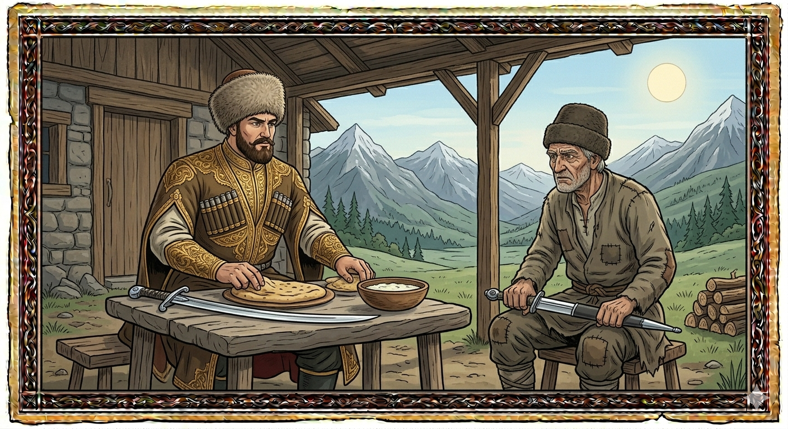

И.А. Дахкильгов. Хьехаме дувцарш - поучительные рассказы-притчи.
И.А. Дахкильгов. Хьехаме дувцарш - поучительные рассказы-притчи. Из ингушского фольклора.

ХьоашалагӀ лаьца
Къе, миска вахаш хиннача лоамаро волча хьоашалгӀа нийсавеннав цкъа Турпал-Ӏаьла. Ший хьаьша малав ховш хиннадац лоамарочоа, хайча а, кхы дикагӀа бола кхача хиннабац цунна оттабе. Ший долаш дар оттадаьд лоамарочо: сискали миста берхӀеи. ХӀама даа волавеннав Турпал-Ӏаьла. Цунна юстаро Ӏохайна вагӀача лоамарочо, хьа а яьккха, ший кара шалта Ӏойиллай. Турпал-Ӏаьлас хьа а даьккха, ший тур Ӏодиллад. ХӀама диа даьнначул тӀехьагӀа лоамарочо хаьттад: - Аз шалта яьккхаяр, нагахьа санна хьо са шуна раьза воацаш йист хинна валаре, хьона тоха, аьнна. Ӏа хӀана даьккхар хьай тур? - Оттадаьча шунах бехказавувла хьо волавеннаваларе, хьона тоха дагахьа даьккхадар, - жоп деннад Турпала-Ӏаьлас.
РУССКИЙ
О гостеприимстве
Богатырь Али оказался в гостях у бедного горца. Хозяин поставил на стол кукурузный чурек и рассол от сыра. Затем хозяин сел в стороне, вытащил из ножен кинжал и положил его себе на колени. Приступая к еде, богатырь Али вытащил из ножен саблю и положил ее рядом. Гость закончил кушать, и тогда горец спросил его: - Я вытащил кинжал, чтобы ударить тебя, если бы ты пренебрег моей скудной едою. А ты почему оголил саблю? - Оголил, чтобы рубануть тебя, если бы ты стал оправдываться, говоря, что у тебя бедная еда, - ответил богатырь Али.
ENGLISH
On hospitality
The hero Ali found himself as a guest in the home of a poor highlander. The host placed a corn loaf and some cheese brine on the table. Then the host sat down to one side, drew a dagger from its sheath and placed it on his lap. As he began to eat, the hero Ali drew his sabre from its sheath and laid it beside him. The guest had finished eating, and then the highlander asked him: 'I drew my dagger to strike you if you had turned your nose up at my meagre meal. But why did you draw your sabre?' 'I drew it to cut you down if you were to make excuses, saying that your meal was meagre,' replied the hero Ali.
НОХЧИЙН
ПОГОВОРКИ
Берза долаш жӀале царгел чӀоагӀагӀа да. - Волчьи десна крепче собачьих зубов.Гуйранара малх да тӀавоацача жерочунга хьеж. - Осенне солнце смотрит на сирую вдову.Дикача сесаго эсалча маьра сий хьалдаьккхад. - Хорошая жена из никчемного мужчины делает именитого мужа.ЦӀаьрмата саг эхь дайна хул. - Жадный человек не имеет стыда.“Ӏаьхача, берзо був; ца Ӏаьхача, дас був”, - яхад устагӀо. - Овца сказала: “Заблею, волк сожрет; не подам голоса, хозяин прирежет (считая, что заболела)”.Виреи хьакхеи хиннаяц Далла хьаькъал декъача. - Ни ишак, ни свинья не явились к богу Дяла, когда он раздавал ум-разум (о неблагородных людях).Къаьна бежан, кхыметтале, къуша а дигац. - Старую скотину даже воры не уводят.Саго ше лелача дар мара Ӏомаде йиш яц. - Человек может знать лишь то, что он видит и слышит там, где он бывает.Хьай кетарга хьежже, кетар йолчун цӀагӀара йоалае саг, даьре коарош долчун лагӀа тӀа ког баккха ца герташ, - лайжжа чувена маьже ювргья хьа. - Глядя на свою овчину, сватайся к овчине, а посватаешься к шелковым рукавам, - растянешься у порога и ногу сломаешь.Хьо сога отта, со нахага отта. - Ты помоги мне, я помогу народу.